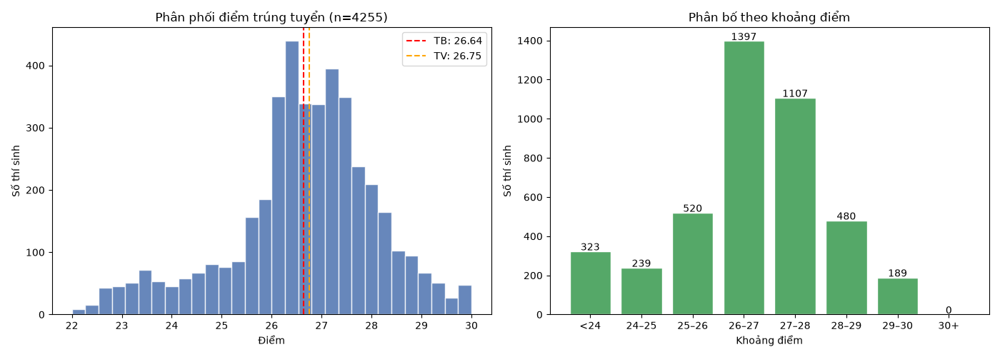
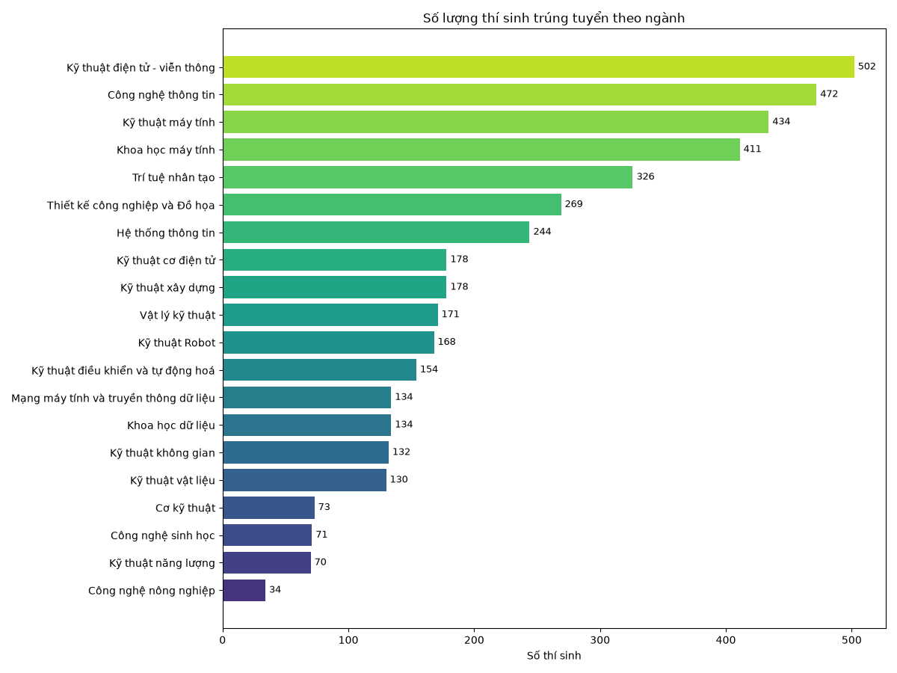
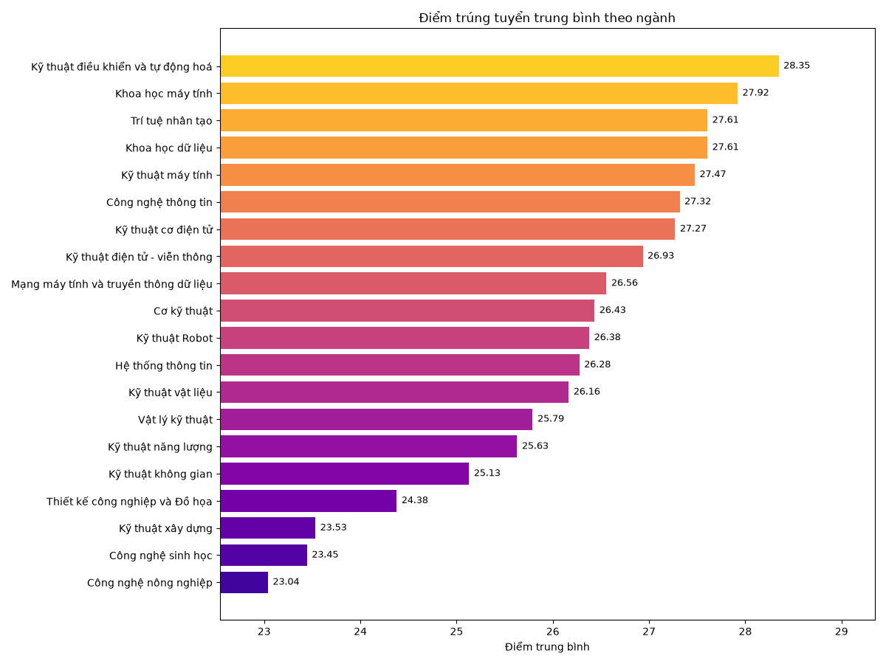
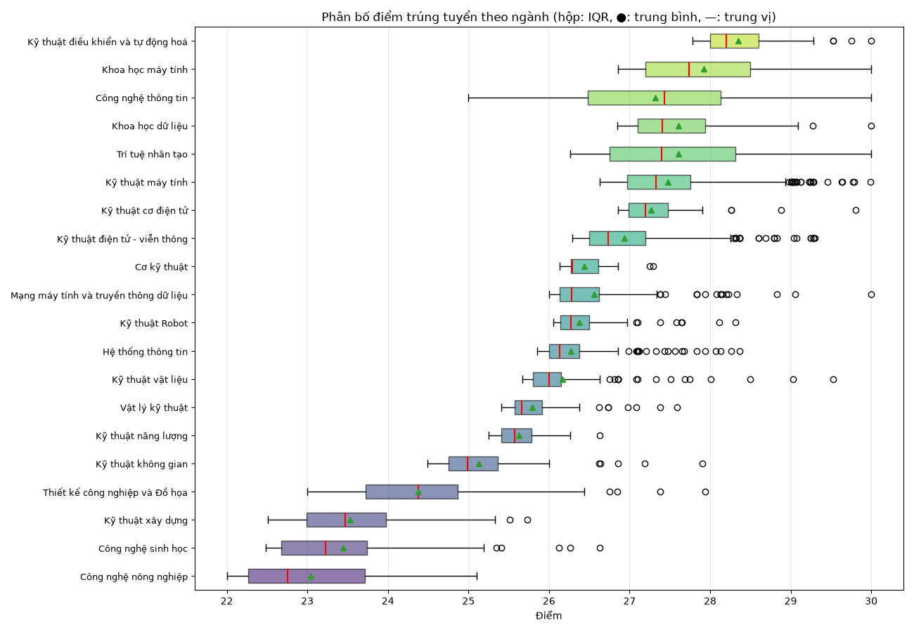
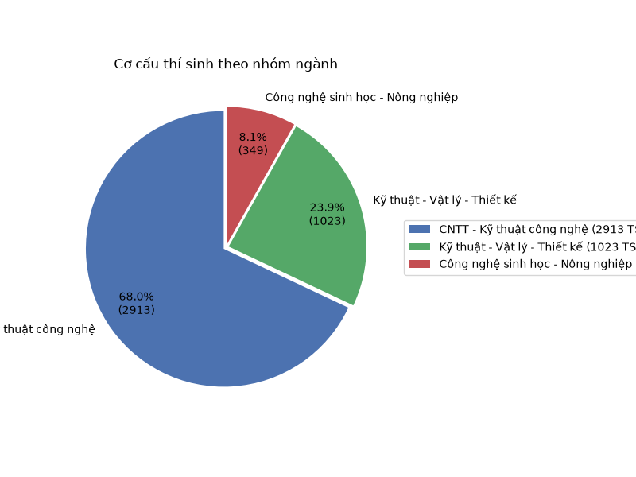
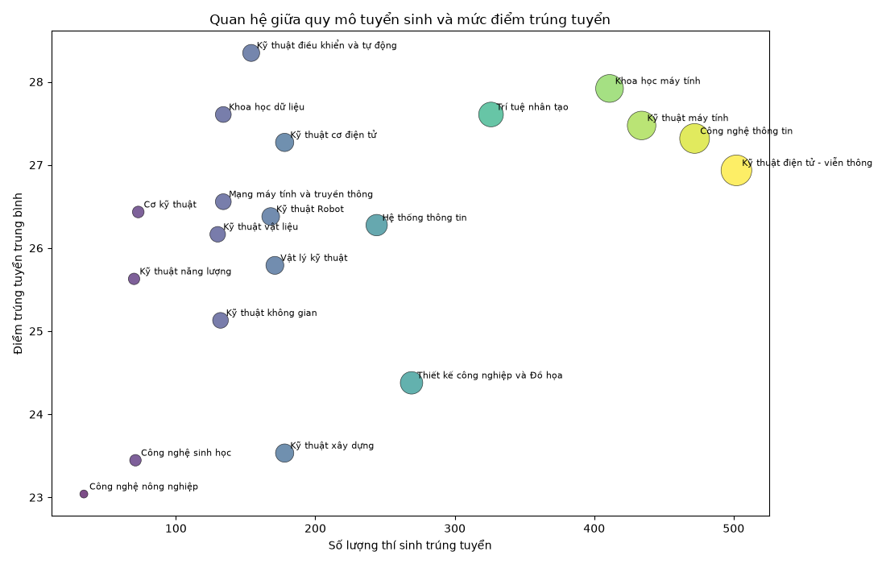

Phân tích dữ liệu 4.285 thí sinh trúng tuyển theo 20 ngành đào tạo
Ngày lập báo cáo: 14 tháng 8 năm 2026
Bộ dữ liệu gồm 4.285 hồ sơ thí sinh chính thức trúng tuyển, tương ứng với 4.255 thí sinh xét theo điểm thi (99,3%) và 30 thí sinh thuộc diện tuyển thẳng / chế độ ưu tiên DBDT. Ghi nhận đầy đủ ở cả 5 trường thông tin, không thiếu dữ liệu.
Các trường thông tin gồm: Mã sinh viên, Họ tên, Điểm trúng tuyển, Mã xét tuyển và Ngành trúng tuyển. Riêng cột điểm có 30 giá trị đặc biệt ("Tuyển thẳng", "DBDT") được tách riêng khi phân tích định lượng.
Phân phối điểm trúng tuyển có dạng lệch âm rõ rệt, đỉnh rơi vào khoảng 26–27 điểm. Gần 2/3 số thí sinh (2.504 người, ≈59%) đạt từ 26 đến 28 điểm. Số thí sinh đạt điểm tuyệt đối 30 là 23 em, và có tới 687 em (16%) đạt từ 28 điểm trở lên.

Khoảng cách giữa điểm thấp nhất (22,00) và cao nhất (30,00) là 8 điểm. Phần đuôi trái (dưới 26 điểm) chỉ chiếm khoảng 25% thí sinh, cho thấy rào cản điểm số vào UET ở mức cao và tương đối đồng nhất.
Đáng chú ý, có 190 thí sinh đạt 29 điểm trở lên – nhóm thủ khoa tiềm năng, chủ yếu tập trung ở Công nghệ thông tin và Khoa học máy tính.
Ba ngành lớn nhất — Kỹ thuật điện tử - viễn thông (502), Công nghệ thông tin (472) và Kỹ thuật máy tính (434) — cùng 5 ngành đông nhất chiếm một nửa tổng chỉ tiêu. Ngược lại, các ngành như Công nghệ nông nghiệp (34), Công nghệ sinh học (71), Kỹ thuật năng lượng (70) và Cơ kỹ thuật (73) có quy mô rất nhỏ.

Quy mô phản ánh rõ định hướng của trường: ưu tiên mạnh cho các ngành CNTT, điện tử và tự động hóa — những lĩnh vực đang có nhu cầu nhân lực lớn.
Xét theo điểm trung bình, các ngành có yêu cầu điểm cao nhất là Kỹ thuật điều khiển và tự động hoá (28,35), Khoa học máy tính (27,92), Trí tuệ nhân tạo (27,61) và Khoa học dữ liệu (27,61). Ngược lại, Công nghệ nông nghiệp (~23,04), Công nghệ sinh học (~23,45) và Kỹ thuật xây dựng (~23,53) có điểm trung bình thấp nhất.

Khung boxplot dưới đây cho thấy không chỉ trung bình mà cả khoảng phân tán cũng khác biệt theo ngành. Những ngành "điểm cao" có dải phân vị hẹp và cao (điểm chuẩn tối thiểu đã nằm ở 26–27), trong khi các ngành ít cạnh tranh hơn có độ phân tán lớn hơn với nhiều thí sinh điểm thấp.

Chia 20 ngành thành 3 nhóm cho thấy bức tranh rõ nét hơn: khối CNTT - Kỹ thuật công nghệ chiếm 74% thí sinh với điểm trung bình 27,28; khối Kỹ thuật - Vật lý - Thiết kế chiếm khoảng 24% với điểm trung bình 25,02; còn khối Công nghệ sinh học - Nông nghiệp chỉ chiếm ~2,5% với điểm trung bình 23,31.

Có mối quan hệ tương đối chặt giữa quy mô tuyển sinh và điểm trúng tuyển của ngành. Những ngành thu hút đông thí sinh nhất (CNTT, Khoa học máy tính, điện tử viễn thông) đồng thời cũng là những ngành có mức điểm đầu vào cao, phản ánh sức hút và độ cạnh tranh về chỉ tiêu của thị trường nhân lực công nghệ.

Dựa trên điểm thấp nhất ghi nhận trong danh sách, có thể ước lượng mức điểm chuẩn (điểm trúng tuyển tối thiểu) của từng ngành:
| Ngành | Điểm TB | Điểm thấp nhất (≈ chuẩn) | Số TS |
|---|---|---|---|
| Kỹ thuật điều khiển và tự động hoá | 28,35 | 27,78 | 153 |
| Khoa học máy tính | 27,92 | 26,86 | 393 |
| Trí tuệ nhân tạo | 27,61 | 26,26 | 324 |
| Khoa học dữ liệu | 27,61 | 26,85 | 134 |
| Kỹ thuật máy tính | 27,47 | 26,63 | 434 |
| Công nghệ thông tin | 27,32 | 25,00 | 464 |
| Kỹ thuật điện tử - viễn thông | 26,93 | 26,29 | 502 |
| Thiết kế công nghiệp và Đồ họa | 24,38 | 23,00 | 269 |
| Kỹ thuật xây dựng | 23,53 | 22,51 | 178 |
| Công nghệ sinh học | 23,45 | 22,48 | 71 |
| Công nghệ nông nghiệp | 23,04 | 22,00 | 34 |
Điểm chuẩn cao nhất (điều khiển - tự động hoá ở mức 27,78) cao hơn điểm chuẩn thấp nhất (nông nghiệp, 22,00) tới 5,78 điểm — khoảng cách rất lớn cho thấy độ phân tầng giữa các ngành.
Phân tích dựa trên toàn bộ 4.285 hồ sơ của danh sách trúng tuyển chính thức. Các số liệu định lượng tính trên 4.255 thí sinh có điểm số (loại trừ 30 trường hợp tuyển thẳng/DBDT). Điểm "trúng tuyển" được coi là điểm xét tuyển cuối cùng đã gồm ưu tiên khu vực/đối tượng; do vậy "điểm chuẩn" ước lượng từ điểm thấp nhất chỉ mang tính tham khảo, có thể khác biệt với công bố chính thức của trường. Mã xét tuyển (CN1–CN21) được ánh xạ sang tên ngành theo bảng dữ liệu gốc; không ghi nhận giá trị thiếu hoặc trùng lặp gây nhiễu.